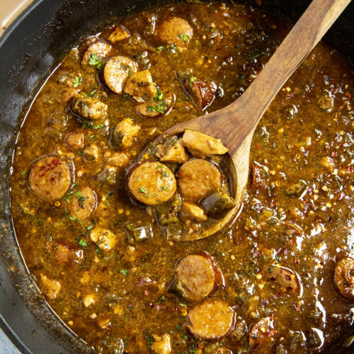

Cajun Chicken & Sausage Gumbo

Description:
Cajun Chicken and Sausage Gumbo is a hearty and flavorful dish that originates from Louisiana. This rich and aromatic stew combines tender chicken, spicy sausage, and a variety of vegetables, all simmered together in a flavorful roux-based broth. It's a perfect comfort food that will warm you up and satisfy your taste buds.
Ingredients:
- 1 lb boneless, skinless chicken thighs, cut into bite-sized pieces
- 1/2 lb Andouille sausage, sliced
- 1/2 cup all-purpose flour
- 1/2 cup vegetable oil
- 1 large onion, chopped
- 1 green bell pepper, chopped
- 2 celery stalks, chopped
- 3 cloves garlic, minced
- 4 cups chicken broth
- 1 can (14 oz) diced tomatoes
- 2 bay leaves
- 1 teaspoon dried thyme
- 1 teaspoon dried oregano
- 1/2 teaspoon paprika
- 1/4 teaspoon cayenne pepper (adjust to taste)
- Salt and black pepper to taste
- Cooked white rice for serving
- Chopped green onions for garnish
Steps:
- In a large, heavy pot, heat the vegetable oil over medium heat. Gradually add the flour, stirring constantly to create a roux. Continue cooking and stirring until the roux turns a deep, rich brown color. Be patient, as this step takes about 15-20 minutes. A dark roux will give the gumbo its characteristic flavor and color.
- Once the roux is ready, add the chopped onions, bell pepper, and celery to the pot. Cook, stirring frequently, until the vegetables are softened and the onions are translucent.
- Stir in the minced garlic, dried thyme, dried oregano, paprika, cayenne pepper, bay leaves, salt, and black pepper. Cook for an additional 2 minutes until the spices become aromatic.
- Gradually pour in the chicken broth while stirring to incorporate the roux mixture with the liquid. Add the diced tomatoes and their juices. Bring the mixture to a gentle boil.
- Add the sliced Andouille sausage and chopped chicken to the pot. Reduce the heat to low, cover the pot, and let the gumbo simmer for about 30-40 minutes, or until the chicken is cooked through and tender.
- As the gumbo simmers, periodically skim off any excess oil that rises to the surface.
- Taste the gumbo and adjust the seasoning with additional salt, black pepper, and cayenne pepper if desired.
- Serve the gumbo hot over cooked white rice. Garnish with chopped green onions for a fresh and flavorful finish.
Back to Main